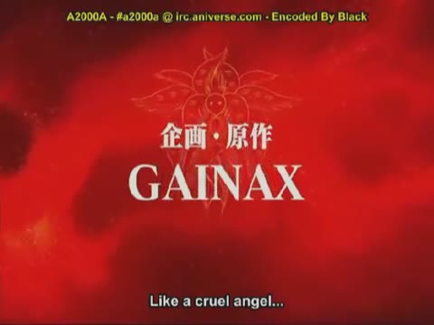
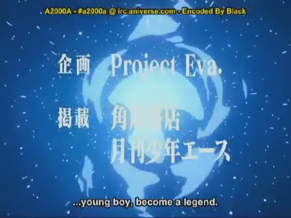
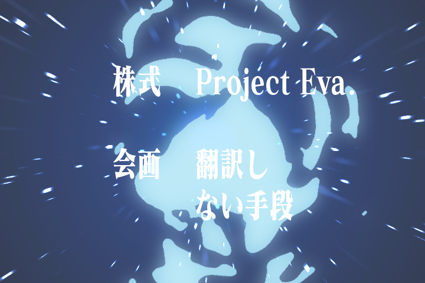
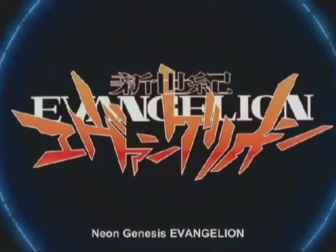
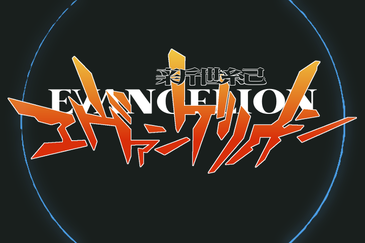
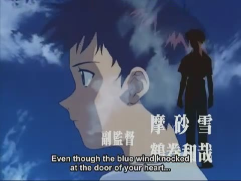
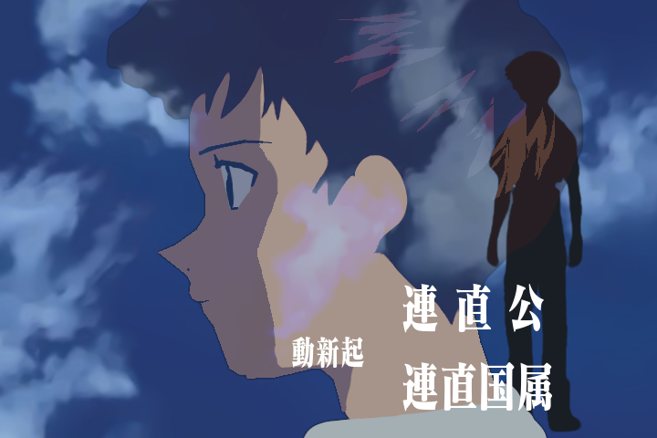

Neon Genesis Evangelion Intro Parody Generator
I forgot why I decided to start working on this.
Basically I'm trying to make a webapp that allows users to edit parts of the NGE intro with their own pictures. This involves completely recreating the intro in HTML5 canvas.
Read more for my progress.
Currently I've completed about 900 frames of the intro, which corresponds to 38 seconds. That took me about a week.
I've organized the code like this: there is a big object whose keys are numbers or ranges in string format, stuff like "18" and "18..24". The keys define the frame or interval of frames we're interested in. The values of these keys are arrays of objects. Each object in the array defines a sprite or some text that should appear in those frames. Here's an example of such an object:
{
type: "image",
asset: "ngelogo_glow",
x: 360,
y: 220,
bbw: 720,
bbh: 550,
zindex: 3,
tweens: [
{
attr: "sbw,sbh",
warper: easelvl4,
stops: [
{
frame: 413,
"sbw": 10,
"sbh": 10
},
{
frame: 431,
"sbw": 1,
"sbh": 1
}
]
},
{
ctxattr: "globalCompositeOperation",
stops:[{frame: 0, "globalCompositeOperation": "screen"}]
}
]
}
This object defines the glowy "Evanglion" logo as it zooms into view. We have a few variables here. First, the asset name refers to a key in an ASSET dictionary whose value is an image object. The x, y, bbw, bbh variables define the position and scaling of the image, and the zindex defines how it should be ordered when the drawing routine writes the images to the canvas.
The tweens array is a collection of objects that describe how the variables should change over time. The "warper" attribute is a function that modifies the interpolation between stops. The warper here causes the tween to ease-in.
Here is another object:
{
type: "text",
textasset: "gainax",
font: "70px matisse2, serif",
color: "#ffffff",
x: 360,
y: 300,
zindex: 2,
tweens: TWEENS.gainax
}
This object puts the phrase "GAINAX" in the middle of the screen, and uses a tween defined elsewhere to have it zoom out. The font "matisse2" is the original font used in the NGE intro, I got it by sending codepoints en masse to an online font previewer, then concatenating all the partial web fonts it returned. Unfortunately its missing a few characters (I had to synthesize one in fontforge for the main title screen) but it'll do.
Now I'm not comfortable posting it yet because it's not done. In its place are a few choice frames from my version, compared to the frames I used for reference.
| Frame 148 | |
|  | |
| Frame 300 | |
|  |  |
| Frame 504 | |
|  |  |
| Frame 704 | |
|  |  |
And here's a video of the whole thing.